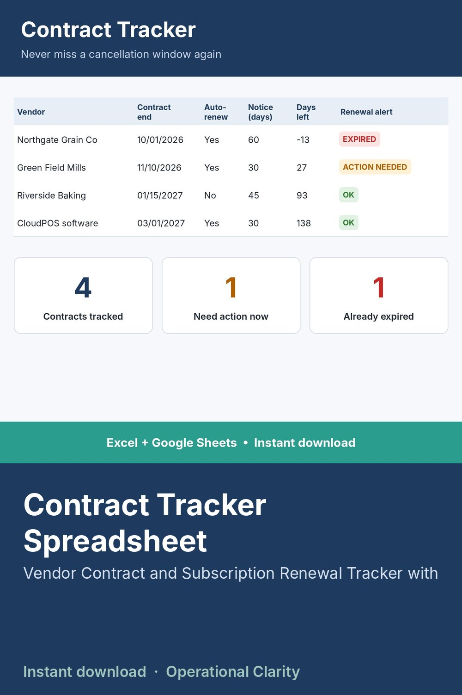

Contract Tracker Spreadsheet

CONTRACT TRACKER SPREADSHEET | Vendor Contract & Subscription Renewal Tracker with Expiry Alerts | Excel & Google Sheets
Stop letting contracts and subscriptions auto-renew because nobody was watching the date. One missed cancellation window can lock you into another year with a vendor you meant to drop. This sheet counts down every contract automatically, so that never happens quietly.
WHAT IT DOES
• Log each contract's start date, end date, auto-renewal status and cancellation notice period
• Automatically counts down the days until each contract expires
• Flags anything that needs action before its notice window closes
BEST FOR
Small business owners and office managers juggling vendor contracts, software subscriptions, leases and service agreements.
WHAT YOU GET
• Contract tracker spreadsheet (.xlsx). No macros, no add-ins.
• START HERE tab with plain-English setup instructions
• Sample data so you can see it working before you enter your own
COMPATIBILITY
Works in Microsoft Excel 2010 and newer. For Google Sheets, upload the file to Google Drive and open it with Google Sheets.
GOOD TO KNOW
• This is a digital download. No physical item will be shipped. Because this is a digital product, all sales are final.